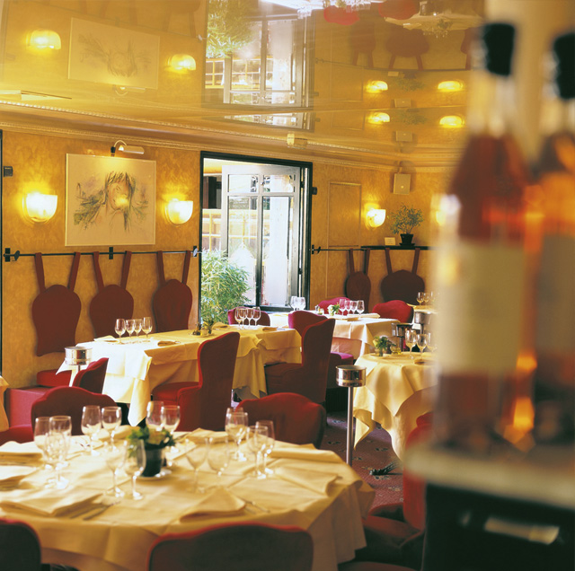
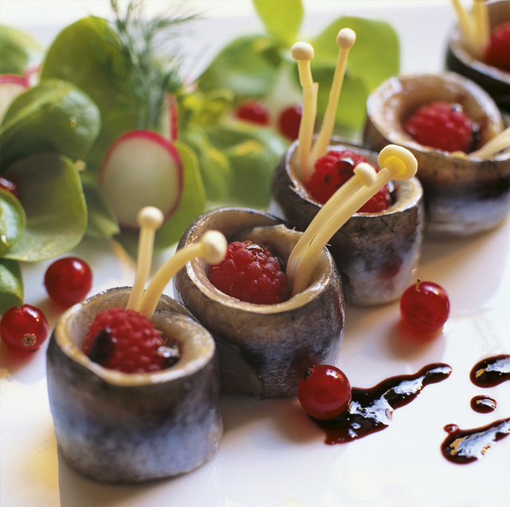

Семь лет назад звездный дизайнер Филипп Старк в тесном сотрудничестве с автором идеи создания Kong Лораном Тайебом создал на крыше магазина Kenzo в историческом Pont Neuf в равной степени необычное и востребованное место встречи узкого круга стильных парижан. Как в стеклянном куполе, выдержанном в викторианском стиле, на шестом этаже, так и на нижнем пятом этаже, открывается грандиозный вид на Сену, Рю Дофен, церковь Сен-Сюльпис. Ярко, кричаще и местами разноцветно - в обстановке перемешаны западные и восточные детали интерьера – головы гейш украшают спинки стульев и прозрачные перегородки ниш. На тарелках представлено все самое свежее и вкусное из кухни этого мира – переплетение с многочисленными заимствованиями из Японии, Азии и лучшего из кулинарии средиземноморского региона. Начиная с вкусного ланча, разнообразных фирменных кофейных напитков и популярных коктейлей и заканчивая большим вечерним меню из нескольких блюд – в Kong возможно все - для любого повода и на любой вкус. И что самое лучшее: время суток меняется, а цены остаются те же – даже вечером. Незабываемым останется ужин при свечах под звездным небом стеклянного купола, особенно для настоящих романтиков. Необходимо предварительное резервирование. Подходящая для еды музыка в сопровождении DJ сопутствует гостям в течение дня. Можно даже заказать любимую песню под любимое блюдо.
Кстати: Kong с пониманием относится к курящим посетителям, так как совсем недавно была открыта волшебная терраса-галерея с типичной французской обстановкой Louis, где в хорошую погоду открывается крыша. Но здесь рады курящим гостям даже с закрытой крышей.


{kind=link}
{kind=link}